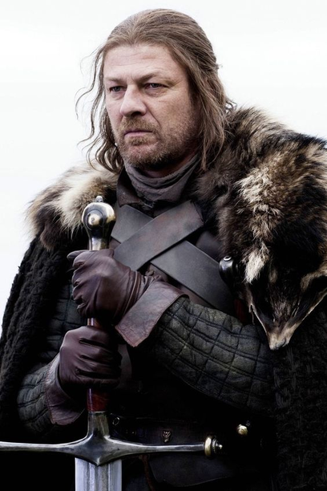

Eddard "Ned" Stark
Patriarca de la Casa Stark y Señor de Invernalia, Ned es un hombre honorable y justo que valora el honor y la lealtad. Después de la muerte de su amigo, el Rey Robert Baratheon, se convierte en la figura central de la lucha por el Trono de Hierro.